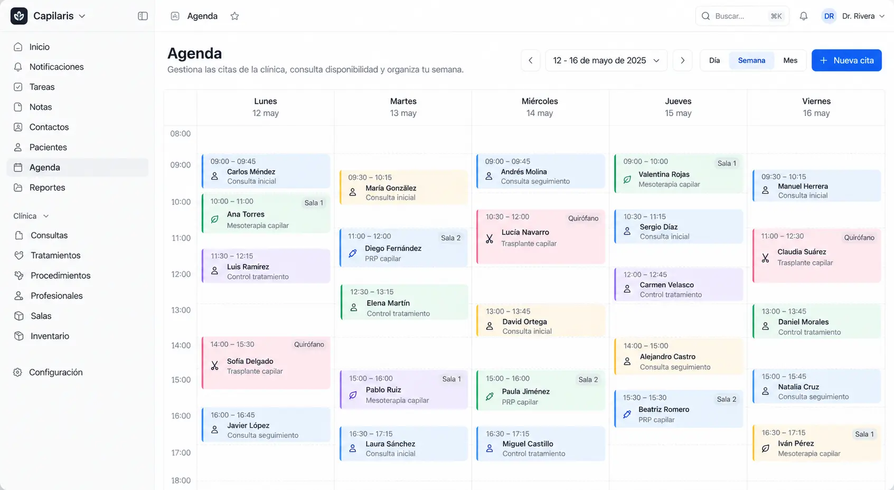
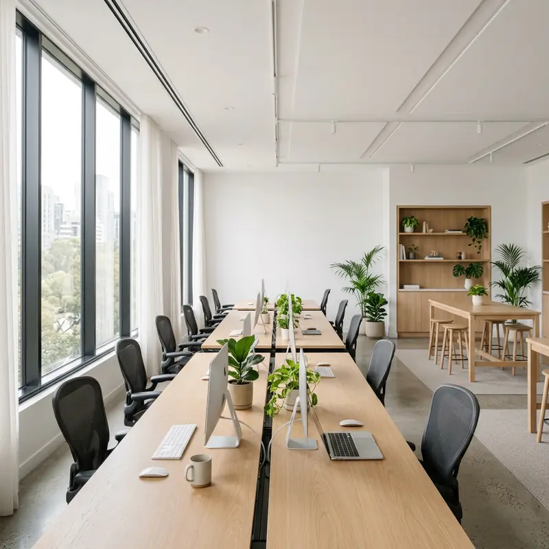

Dependes del boca a boca
Unos meses la agenda está llena y otros, a medias. Y nunca sabes cuál te toca.
Un sistema de captación pensado para clínicas capilares que quieren crecer más allá de las recomendaciones.

Empresas que han confiado en nosotros.
Si te reconoces en alguna, el problema no es tu clínica. Es la forma de captar pacientes.
Unos meses la agenda está llena y otros, a medias. Y nunca sabes cuál te toca.
Escriben, preguntan cuánto cuesta y desaparecen. Ni valoración ni cirugía.
Comparan solo por precio y acaban operándose fuera. Tu clínica ni entra en la conversación.
Conecta tu inversión en captación con lo que de verdad importa: las oportunidades que llegan a tu clínica.
¿Notas menos densidad en las entradas? Pide tu valoración capilar gratuita con un especialista.
Valoración capilar gratuita
Solicitudes de hoy 7
Pacientes nuevos al mes Pacientes Coste por paciente
“Nos encanta cómo trabajan. Son muy buenos en lo que hacen y, sobre todo, valoramos muchísimo su rapidez, siempre responden al instante y están pendientes de todo.”

Somos Marketing Health for Clinics, una agencia con más de 6 años de experiencia en marketing. Hoy nos dedicamos a una sola cosa: crear sistemas de captación para clínicas capilares que quieren llenar su agenda cada mes, sin depender del boca a boca.
Descubre cuántas oportunidades podrías generar con nuestro sistema y qué supondrían para tu clínica, a partir de tus propios datos.
5 pasos breves · Sin coste
Volumen, ticket y equipo de seguimiento
Contactos → valoraciones → pacientes
Una auditoría para validar el potencial
Una estimación orientativa, con los supuestos a la vista.
Las oportunidades necesarias para tu escenario.
Pacientes e ingresos brutos potenciales.
Qué revisar para convertir potencial en crecimiento.
Si te queda alguna duda, la resolvemos juntos en la llamada.
Depende de tu clínica, tu zona y tus objetivos. En la llamada analizamos tu caso y te damos una propuesta clara, sin sorpresas.
Empezamos con un periodo inicial de 3 meses. Las primeras 2 a 4 semanas las dedicamos a montar tu sistema y, a partir de ahí, las campañas se ponen en marcha. Después de esos 3 meses pasa a ser una mensualidad sin permanencia, que puedes dejar cuando quieras.
Dedicamos las primeras 2 a 4 semanas a montar tu sistema. En cuanto las campañas se ponen en marcha, empiezan a llegar los primeros contactos.
Sí. Trabajamos con clínicas capilares de cualquier zona.
Si al terminar los 3 primeros meses no hemos conseguido 30 leads cualificados para tu clínica, seguimos trabajando sin cobrarte hasta conseguirlos.
Muy poco. Al principio nos cuentas cómo trabaja tu clínica y, después, tu equipo solo tiene que atender a los pacientes que lleguen. Del resto nos encargamos nosotros.